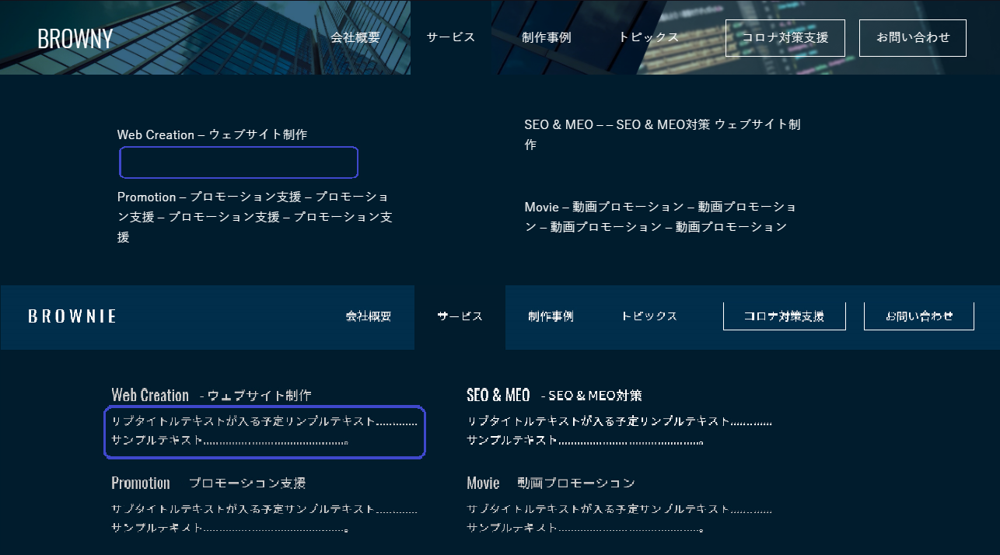

The upper one is from website feed. The lower one is from PSD file. I noticed description is missing after menu items.
I don't understand Japanese very much. I cannot really say if it is important for you or not. This is the only mismatch with the PSD. A few fonts were mismatched. Not very much noteworthy.